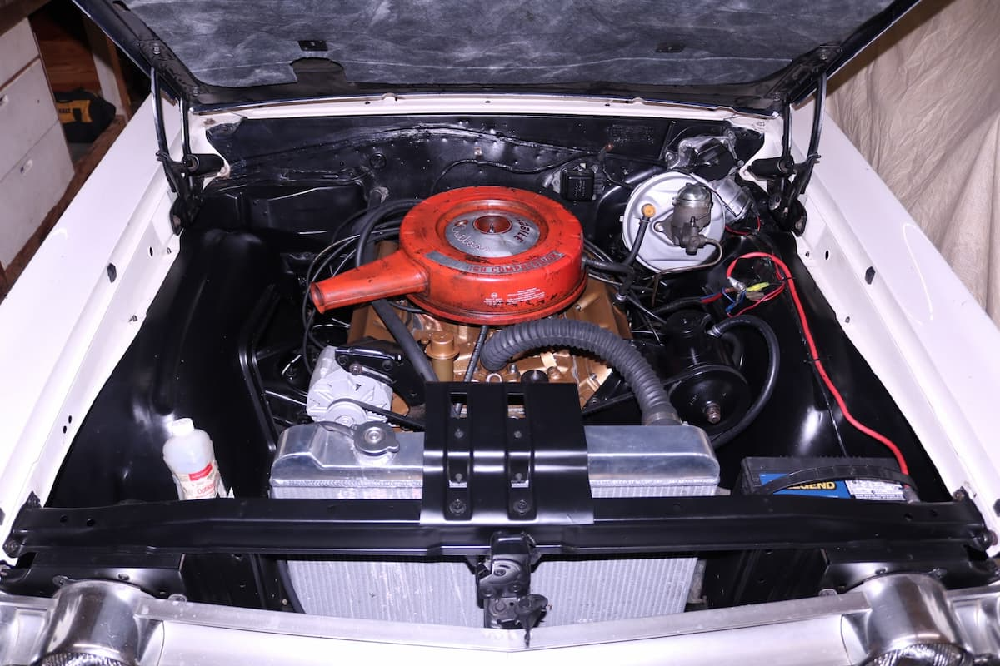

01
Architecture
Earthbag Dome
A 12-foot earthbag dome designed and built by hand after an apprenticeship at Cal-Earth Institute — now a tea house on Airbnb Experiences.
Read the buildMechanical engineer · Northern California
Hi, I’m Sonny Morrow — a mechanical engineer in the medical device industry. Outside of work I’m still an engineer: I design and build my own projects, from an adobe tea house and a heavy-timber pavilion to a 1960 Airstream restoration, and I see each one through from first sketch to the finest detail.
See the workA 12-foot earthbag dome designed and built by hand after an apprenticeship at Cal-Earth Institute — now a tea house on Airbnb Experiences.
Read the build
A 1984 Mercedes 300D with 230k miles, pulled engine-out, resealed, rebearinged and put back together leak-free.
Read the build
My late grandfather’s 1964 Oldsmobile, passed down two generations. Its knocking V8 was caught days from seizing and rebuilt top to bottom.
Read the build
A high-efficiency wood-burning heater built into the dome, routing its exhaust through a thermal-mass bench that stays warm long after the fire.
Read the build
A 1960 Airstream Safari, gutted down to its aluminum skins and being rebuilt from the floor up — under a timber pavilion I built to shelter it.
Follow the build
A 26-foot heavy-timber pavilion I designed in SolidWorks and built to shelter the Airstream — six 8×8 posts, doubled 2×12 beams and fourteen 2×12 rafters.
Read the buildSelected projects from my professional work.
Case studies from my professional work are on the way.